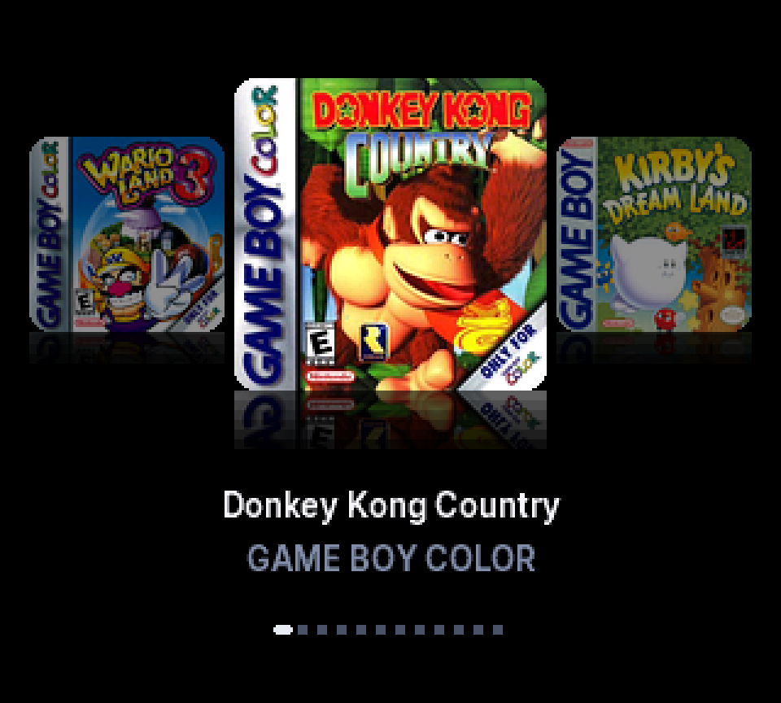
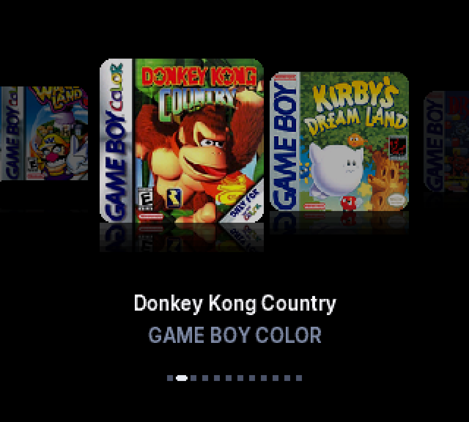
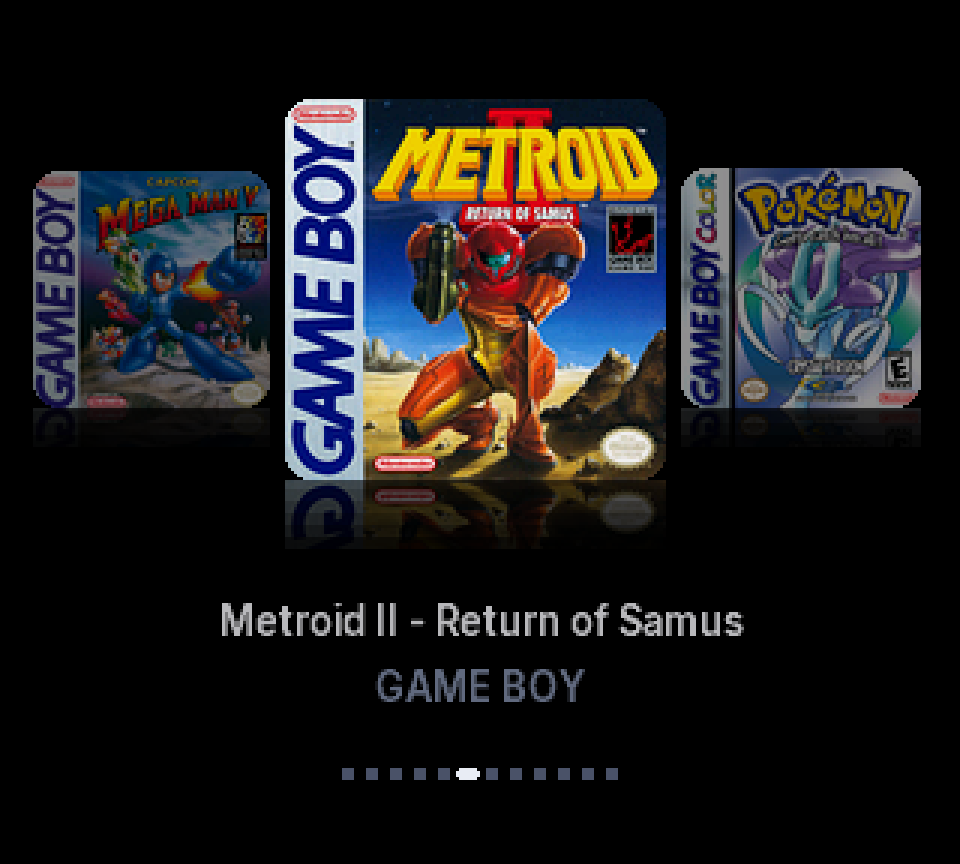

Your covers, at 320 by 288.
Full color box art on the Pocket's screen, the selected game in the middle, its neighbors either side. Reflections on the floor. The title underneath, the platform under that.
It glides.
Left and Right move the covers over eight frames with an ease out, at the Game Boy's 59.7 Hz. Hold to scroll. Long titles scroll as a marquee.
Hundreds of games, no waiting.
Covers stream from the SD card through a cache of 128, the selected game first, then its neighbors, then four ahead in the direction you are going. Libraries up to 2047 games work. 700 and more are verified on hardware.
Favorites and All games are two modes on Select. The position bar shows where you are. L and R jump by letter.